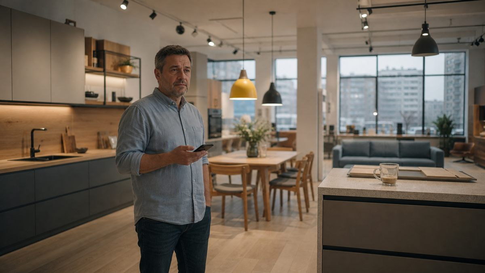

«Мы ведь делаем всё то же самое, что и раньше. Даже лучше, а продаётся хуже».
Эту фразу сейчас слышишь почти от каждого второго собственника мебельной компании. От тех, кто много лет работал честно, построил производство, салон, отдел продаж, наладил сайт и рекламу, собрал замерщиков и монтажников в ту нервную живую систему, которую снаружи называют «мебельным бизнесом», а изнутри иногда хочется назвать покороче и помрачнее.
В этой фразе, как ни странно, помещается почти весь диагноз нынешнего кризиса.

Дело может быть не в том, что компания стала хуже работать, скорее наоборот. Менеджеры научились отвечать быстрее, производство собирает аккуратнее, замерщик стал внимательнее, сайт обновился, реклама стала профессиональнее, скрипты - приличнее. Собственник, бывает, даже начал смотреть отчёты, а в наших широтах это уже почти акт гражданского мужества.
И всё равно продажи могут падать, потому что рынок изменился быстрее, чем компания.
Это неприятная мысль, она ломает привычное управленческое утешение. Если продажи падают потому, что кто-то плохо работает, значит, надо найти виноватого, провести совещание, поменять рекламщика, уволить менеджера, заменить РОПа, внедрить CRM, потом ещё раз внедрить CRM, а потом уже внедрить её по-настоящему, чтобы люди хотя бы иногда туда что-то заносили.
Но если продажи падают потому, что изменился сам покупатель, привычные меры начинают работать слабее и не оттого, что они неправильные, а оттого, что лечат вчерашнюю болезнь.
Когда-то мебельщик мог нащупать свою связку: продукт, клиент, цена, реклама, салон, замер, договор, производство, монтаж. И эта связка работала годами. Где-то лучше, где-то хуже, но в среднем работала. Клиент приходил, выбирал, сомневался, торговался, заказывал, ругался из-за сроков, радовался, если всё приехало вовремя. Жизнь была понятна, проста и приятна :-)
Сейчас одной такой связки уже мало. Увы!
Нельзя однажды «добиться» продаж, так как можно только постоянно их добиваться. Нельзя однажды найти свой рынок: продукт приходится заново сверять с деньгами клиента, с его страхами и привычками, с каналами продаж, со сроками ремонта, с ипотекой и ставками, с маркетплейсами, ожиданиями от сервиса и общим настроением человека, который смотрит на свою квартиру и думает не «какую бы мне красивую мебель купить», а «может, старый шкаф ещё годик потерпит, он же есть не просит».
Старый рынок закончился не потому, что мебель стала не нужна
Мебель из жизни никуда не делась: люди продолжают жить в квартирах, готовить на кухнях, хранить вещи, работать за столами, укладывать детей спать, переезжать, разводиться, жениться, покупать и сдавать квартиры, делать ремонт и проклинать планировки, придуманные людьми, которые, судя по всему, ненавидели человечество вообще и шкафы в частности.
Но одно дело, что мебель в принципе нужна, и совсем другое, когда человек готов прямо сейчас достать деньги и заказать её именно у вас.
В кризис мебель из товара желания превращается в товар решения. Её покупают, когда есть достаточно сильная причина не откладывать. Раньше такой причиной обычно служил сам ремонт, переезд, новая квартира, желание обновить интерьер или просто нормальное потребительское настроение. Сегодня покупателю всё чаще приходится объяснять самому себе, почему он должен расстаться с деньгами именно сейчас.
Не вообще когда-нибудь, не после того, как ставки снизятся, не после того, как станет понятно с работой, не после того, как он ещё десять раз посмотрит маркетплейсы, где шкаф стоит подозрительно дёшево и выглядит на картинке так, будто его собирали не из ЛДСП, а из мечты.
И тут многие мебельные компании продолжают вести себя так, будто покупатель остался прежним. Они говорят ему: «У нас большой выбор». А он слышит: «Сейчас я утону в вариантах, а потом ещё и заплачу за ошибку».
Говорят: «Мы делаем индивидуально». Он переводит это про себя так: цена будет непредсказуемой, срок тоже, а если что-то пойдёт не так, индивидуальной станет ещё и его головная боль.
Когда менеджер бодро предлагает «оставьте заявку, я перезвоню», клиенту слышится долгий разговор, в конце которого ему назовут цену, от которой захочется обратно в детство, где был один письменный стол и никаких ипотек.
Слова компании в принципе верные, но попадают они в другую голову. А другая голова требует другой логики продаж.
Главный вопрос - уже не «как получить больше лидов»
В мебельном бизнесе есть удобная иллюзия: если продаж мало, значит, надо больше заявок. Иллюзия удобна тем, что снимает с компании обязанность разбираться в себе. «Реклама плохо работает», и точка, диагностика окончена. Рекламщик, конечно, всегда виноват, это его профессиональная функция в экономике, но иногда он виноват не один.
В кризис лиды бывают не просто дороже - они бывают (становятся) другими!
Человек оставил заявку не потому, что готов покупать: он хочет понять порядок цен или сравнить вас с маркетплейсом, или получить проект и уйти думать, или убедиться, что сейчас покупать ему как раз не надо, или потому что жена сказала: «давай хотя бы узнаем», а муж внутренне уже постригся в монахи финансового воздержания.
Поэтому главный вопрос сегодня звучит иначе: "Что происходит с клиентом после того, как он появился в вашей системе."
Здесь мебельной компании приходится смотреть уже не на красивую цифру входящих обращений, а на весь путь клиента: кто пришёл, с каким сценарием, чего боится, какой бюджет реально держит в голове, с чем сравнивает, на каком шаге остывает, какие слова менеджера ему помогают, а какие убивают сделку.
Звучит просто, но многие компании до сих пор живут в CRM, где причины отказа выглядят как кладбище управленческой мысли: «дорого», «подумает», «не актуально», «выбрал других», «не дозвонились». Это не причины, это надписи на могильных плитах сделок.
Нормальная причина должна помогать что-то менять. «Дорого» - почти ничего не значит, и не дорого, а дороже! Дороже (а не дорого) по сравнению с чем: с маркетплейсом, с конкурентом, с его ожиданием до встречи с реальностью, с его зарплатой? «Подумаю» — тоже не причина. О чём он думает: о цене, о доверии, о сроке, о том, что жена хочет матовый фасад, а он хочет просто не участвовать? О том, что непонятно, чем вы лучше?
В кризис выигрывает не тот, кто громче кричит про скидку, а тот, кто точнее понимает тормоза клиента.
Покупателю сейчас нужна не мебель, а основание потратить деньги
Это, пожалуй, самая важная мысль во всей этой истории. Покупатель не перестал хотеть хорошую кухню, удобный шкаф или нормальную детскую. Он стал осторожнее: в голове у него появилось гораздо больше внутренних «нет» и «вдругов»
Нет, сейчас не время. Нет, надо подождать - вдруг подешевеет. Вдруг ремонт затянется. Вдруг компания сорвёт срок. Вдруг цвет на образце один, а в квартире окажется совсем другой. Вдруг через полгода окажется, что нужно было совсем не это.
Поэтому задача мебельной компании сегодня не просто показать продукт. Нужно дать клиенту три основания купить сейчас: рациональное, эмоциональное и бытовое.
Рациональное - это понятная цена, состав, срок, договор, гарантия, нормальное сравнение вариантов. Эмоциональное - доверие и спокойствие, ощущение, что компанией управляют взрослые люди, а не группа энтузиастов, открывших цех вчера и уже сегодня обещающих немецкое качество по цене табуретки. Бытовое - клиент должен понимать, как именно всё произойдёт от замера до монтажа: сколько раз его потревожат, кто за что отвечает, где возможны риски и как компания их закрывает.
Это и есть новая продажа: не «мы сделаем вам мебель», а «мы проведём вас через решение, где много денег, много риска, много бытовой нервотрёпки и очень мало желания ошибиться».
Салон больше не может быть просто салоном
Когда-то салон был местом, куда человек приходил посмотреть мебель. Сейчас он может посмотреть её в телефоне, и, надо признать, в телефоне она часто выглядит лучше, чем в реальности: там нет запаха склада, кривого угла образца, усталого продавца и следов от чужих пальцев на фасаде.
Если салон остаётся просто выставкой образцов, он проигрывает экрану.
Сильный салон сегодня - это место диагностики. Клиент приходит не «посмотреть кухни», а разобраться, что ему делать с его помещением, бюджетом, сроками, привычками и страхами. По сути, кабинет мебельного врача, только без белого халата, иначе люди начнут нервничать ещё до расчёта.
В таком салоне клиент получает то, чего не даст маркетплейс:
- разбор планировки,
- проверку реальных сценариев жизни,
- объяснение, где можно сэкономить, а где не стоит изображать финансового героя,
- сравнение материалов человеческим языком,
- понимание, какие решения устареют через два года, а какие проживут дольше,
- оценку рисков сборки (монтажа),
- внятную последовательность шагов.
То есть салон продаёт уже не квадратные метры выставки, а компетентность. Если человек после визита понял свою задачу лучше, чем до, салон работает. Если он просто увидел ещё двадцать фасадов, он получил не помощь, а информационное расстройство.
Ассортимент надо не расширять, а дисциплинировать
В кризис у многих появляется естественное желание: дать клиенту больше выбора. Больше фасадов, цветов, материалов, конфигураций, акций - всего больше. Кажется, что если клиент не покупает, значит, он просто ещё не нашёл нужный вариант.
Обычно происходит обратное: чем больше вариантов, тем тяжелее решение. Особенно когда покупатель тревожный, деньги ограничены, рынок нестабилен, а ошибка дорогая.
Ассортимент полезно разложить по трём полкам.
Первая - быстро и понятно. Ограниченная линейка с ясной ценой, сроком, комплектацией. Не бесконечный конструктор, а продукт, который можно за десять минут объяснить и за полчаса посчитать. Кухни из ограниченной матрицы, типовые шкафы, прихожие, рабочие зоны, мебель для арендных квартир. Здесь клиент покупает не уникальность, а ясность.
Вторая - разумная индивидуальность. Решения, которые можно адаптировать под клиента, но без полного производственного безумия: модульность, параметрические размеры, ограниченный набор материалов, понятные правила изменения цены. Клиент получает ощущение, что это «его проект», а компания сохраняет управляемость.
Третья - сложные проекты. Кухни, гардеробные, комплексные интерьеры, нестандартные планировки, премиальные материалы, работа с дизайнером. Здесь нельзя конкурировать с маркетплейсом, и не надо. Здесь продают компетенцию, надёжность, вкус и способность довести сложный проект до результата.
Если эти три полки перемешать, клиент путается, менеджер мечется, производство страдает, а собственник смотрит на маржу и потихоньку начинает верить в загробную жизнь, потому что в этой пока всё плохо.
Скидка не заменяет доверия
Скидкакажетсяуниверсальным лекарством:
- продажи упали - давай скидку
- клиент сомневается - скидку,
- конкурент дешевле - скидку,
- менеджер не знает, что сказать - снова скидку
- собственник устал - скидку и немного тишины.
Но скидка часто не решает главную проблему. Если клиент не доверяет компании, скидка только делает его подозрительнее. Если он не понимает ценности, скидка лишь подтверждает, что цену рисовали с потолка. Если он боится ошибиться, скидка страх не снимает. А если он вообще не готов покупать сейчас, скидка просто учит его дожидаться следующей.
Скидка снижает цену, а клиенту чаще нужно снизить риск. Вместо скидки можно продавать совсем другое:
- фиксированную смету на оговорённый срок,
- поэтапную оплату,
- гарантию сроков или компенсацию за просрочку,
- проверку проекта перед запуском в производство,
- фото- или видеоконтроль этапов,
- прозрачный договор,
- быструю замену дефектных элементов,
- нормальный сервис после монтажа,
- одного ответственного менеджера, а не квест «найди крайнего».
Покупатель в кризис платит не только за мебель, он платит за снижение тревоги. И если компания этого не понимает, она будет пытаться конкурировать ценой там, где надо было конкурировать спокойствием.
Недогруз производства - это не только беда
Многие мебельные компании сейчас живут в странном состоянии: мощности есть, люди есть, опыт есть, станки есть, а заказов меньше, чем нужно. Первое желание понятное: загрузить производство любыми заказами. Понятное, но опасное!
Любой заказ не равен хороший заказ, особенно в индивидуальной мебели, где можно загрузить производство так, что оно будет занято, менеджеры будут героически бегать, монтажники страдать, клиент будет недоволен, а прибыль в конце окажется похожа на следы жизни на Марсе: теоретически возможно, практически не видно.
Недогруз стоит использовать не только для поиска заказов, но и для пересборки самой продуктовой логики. Когда производство перегружено, у компании нет времени думать, все тушат пожары. Когда недогружено, появляется редкая возможность сделать то, на что обычно не хватает сил: выделить ходовые конфигурации, посчитать настоящую маржинальность разных типов заказов, увидеть, какие проекты съедают ресурс, собрать быстрые линейки, подготовить понятные пакеты, очистить ассортимент от красивых, но вредных решений, переписать скрипты, сделать нормальные образцы, научить менеджеров продавать не скидку, а логику решения.
Кризис продаж - это не только время выживания, но и время санитарной обработки бизнес-модели. В хорошие годы компания может зарабатывать, несмотря на хаос, в плохие хаос начинает выставлять счета.
Подробнее об этом написано, точнее детально расписано в моей статье"Как мебельной компании развиваться, когда заказов мало".
Контент должен перестать быть витриной тщеславия
Многие мебельные компании ведут соцсети так, будто их главная задача -доказать миру, что у них есть красивые картинки. Да, картинки нужны, спору нет - мебель визуальна, но одних картинок мало, особенно когда клиент не понимает, как ему вообще принять решение.
В кризис контент должен отвечать не только на вопрос «как красиво», но и на вопрос «как не ошибиться».
Объяснять стоит конкретные вещи. Как выбрать кухню под реальный бюджет. Где можно сэкономить, а где категорически нельзя? Почему одинаковые на вид шкафы стоят по-разному. Какие ошибки чаще всего всплывают после монтажа. Как правильно подготовиться к замеру. Какие решения плохо живут в маленьких квартирах. Как читать коммерческое предложение. Что вообще стоит спросить у мебельщика до подписания договора.
Такой контент не продаёт сразу, зато формирует доверие а доверие сегодня часто важнее, чем очередная акция «только до воскресенья», которая идёт уже третий год, потому что воскресенья в мебельном маркетинге, кажется, бессмертны.
Не один большой план, а постоянный цикл экспериментов
И вот здесь возвращаемся к главной мысли это статьи.
Когда-то можно было считать, что компания однажды нашла свою работающую модель: продукт, клиента, канал, рекламу, салон, скрипт, экономику, и дальше остаётся только улучшать. Сейчас одного улучшения мало, нужно постоянно проверять, работает ли модель вообще.
Это значит, что нужен переход от режима «сделали стратегию и живём» в режим постоянных экспериментов. Не хаотичных, в духе «а давайте попробуем TikTok, потому что чей-то племянник сказал, что там все продажи». Нормальных управленческих экспериментов: с гипотезой, сроком, ответственным и метрикой.
Гипотеза может быть, например, такая: если предложить клиентам быстрые кухни из ограниченной линейки с понятным сроком, доля перехода из заявки в замер вырастет. Или такая: если менеджер на первом звонке будет не продавать замер, а диагностировать сценарий покупки, доля качественных встреч увеличится. Или ещё: если после расчёта отправлять клиенту не только цену, а объяснение трёх вариантов по бюджету, отказов «дорого» станет меньше.
Каждую гипотезу проверяют коротким циклом: две-три недели, месяц. Потом смотрят цифры, а не ощущения и не «вроде людям понравилось», не «менеджеры говорят, что стало лучше», ведь менеджеры вообще много чего говорят, особенно когда отчётность рядом.
Смотрят на конкретное: сколько обращений, сколько квалифицированных клиентов, сколько замеров и расчётов, сколько договоров, какая маржа, средний чек, срок сделки, причины отказа, что изменилось по сравнению с обычной схемой.
Именно так компания перестаёт угадывать рынок и начинает его исследовать.
Собственнику снова придётся стать исследователем
Звучит странно, но многие собственники именно с этого и начинали. Они пробовали, смотрели, разговаривали с клиентами, сами ездили на объекты, сами слышали претензии, сами понимали, где боль, сами придумывали решения.
Потом бизнес выро: появились отделы, руководители, отчёты, подрядчики, регламенты, рекламные кабинеты, CRM, управленческие слои. И собственник постепенно стал получать не сам рынок, а его пересказ: менеджер пересказывает клиента, РОП - менеджера, маркетолог - рекламный кабинет, финансист - последствия. А собственник сидит наверху и пытается понять, почему всё стало хуже, хотя в каждом отдельном отчёте вроде бы кто-то что-то делает.
В кризис этого недостаточно: собственнику нужно снова приблизиться к реальности. Не обязательно самому продавать каждый день, хотя иногда это полезнее любого тренинга, но регулярно слушать звонки, читать переписки, смотреть причины отказов, присутствовать на разборах сделок, разговаривать с клиентами, ездить в салон, наблюдать, как менеджер объясняет цену, читать живые коммерческие предложения - придётся. Не для того, чтобы кого-то поймать и наказать. А чтобы заново почувствовать рынок.
Потому что рынок изменился не в отчётах: он изменился в интонации клиента, в паузах после цены, в вопросах про рассрочку, в сравнении с маркетплейсом, в желании отложить, в страхе подписывать договор, в просьбе «а можно попроще», в фразе «мы пока просто смотрим». Вот там настоящая информация, а не в красивой презентации о стратегии продаж.
Что делать практически
Если переводить всё это в нормальный управленческий план, лучше не пытаться одним движением «победить кризис». Такие движения обычно заканчиваются новым логотипом, новым сайтом и старой воронкой.
Полезнее идти последовательно и начать можно с трёх вещей.
Первое - взять и руками разобрать последние сто отказов. Не формально, а внимательно: звонки, переписки, комментарии менеджеров, суммы, сценарии, сроки, конкуренты, разложить отказы по реальным причинам. Если после этого окажется, что «дорого» составляет семьдесят процентов, значит, анализа не было, так как вы просто переписали симптом.
Второе - поделить клиентов не на «розницу» и «заказ», а на живые ситуации. Новая квартира, ремонт, вторичка, маленькая квартира, арендное жильё, детская, хранение, домашний офис, комплексный проект, срочная и отложенная покупка. Под каждый сценарий - отдельное предложение, не идеальное, но внятное: проблема, решение, цена или диапазон, срок, что входит, какие риски закрываем, почему именно сейчас.
Третье - переписать первый контакт и коммерческое предложение. Менеджер должен не просто отвечать на вопрос «сколько стоит», а выяснять сценарий, бюджетную рамку, срок, источник тревоги, альтернативы и степень готовности. Первый разговор - это диагностика, а не охота с прайс-листом. КП, в свою очередь, должно перестать быть свалкой цифр и стать логикой решения: что мы поняли, что предлагаем, почему так, какие есть варианты, где можно сэкономить, где не советуем, что будет дальше, какой срок, какие гарантии, что нужно от клиента.
Дальше идут вещи второго уровня. Короткий цикл повторных касаний - не «потом перезвоним», а нормальная система: через день, через три, через неделю, через две, с разными поводами и пользой для клиента. Антикризисная продуктовая линейка - понятная, быстрая, технологичная и маржинальная; не самая дешёвая, но та, где клиент видит ценность, а компания не уходит в минус ради загрузки. Работа со старой базой, регулярный ритм экспериментов раз в две недели, и хотя бы раз в месяц - честный разбор не «что мы улучшили в старом», а «что мы начали делать иначе».
Потому что если рынок изменился, а компания только улучшила старые действия, она может стать лучшей версией вчерашнего дня. А вчерашний день, как известно, платёжеспособностью не обладает.
В чём главная ошибка мебельщика сейчас
Главная ошибка не в том, что мебельщики плохо работают. Многие как раз работают много, тяжело и честно.
Ошибка в другом: они продолжают ждать возвращения старого нормального рынка.
Старый нормальный рынок был удобен:
- на нём можно было ошибаться и всё равно продавать,
- можно было держать слабую CRM, но вытягивать на трафике,
- плохо анализировать отказы, но получать новые заявки,
- держать раздутый ассортимент, но компенсировать хаос спросом,
- продавать мебель, не объясняя клиенту, как ему вообще принимать решение.
Сейчас рынок стал менее прощающим, он не отменил мебельный бизнес, так как он просто перестал оплачивать управленческую лень, которую раньше можно было прятать под словом «рост».
Это неприятно, но в этом есть и хорошая новость. Если рынок стал сложнее, преимущество получает не тот, кто громче рекламируется, а тот, кто лучше думает, точнее диагностирует, быстрее проверяет гипотезы, спокойнее работает с клиентом, честнее считает экономику и не пытается продавать вчерашний продукт сегодняшнему человеку.
Нельзя добиться. Можно только добиваться
В мебельном бизнесе больше нельзя один раз найти правильный ответ. Не получится один раз написать скрипт, собрать ассортимент, обучить менеджеров и решить, кто ваш клиент.
Рынок теперь движется быстрее, чем мебельная компания привыкла думать:
- покупатель меняет поведение,
- каналы меняют правила,
- маркетплейсы забирают стандарт,
- деньги дорожают и дешевеют не по просьбе мебельщиков,
- клиент становится осторожнее, его выбор длиннее, доверие дороже.
Поэтому главный вопрос собственника сегодня звучит уже не «как нам вернуть продажи», а так: что мы начали делать иначе, чтобы снова стать нужными клиенту?
Если на этот вопрос нет конкретного ответа, значит, компания не управляет кризисом. Она просто ждёт, что он сам устанет, а кризисы, в отличие от сотрудников, обычно не устают по графику. Они уходят тогда, когда компания меняется быстрее, чем ухудшается ситуация.
Именно поэтому продаж сегодня нельзя «добиться» - можно только добиваться. Каждую неделю, в каждом продукте, в каждом канале, в каждом разговоре с клиентом, в каждом отказе и в каждом новом предложении. В каждой попытке понять, что на самом деле происходит с рынком.
Мебельщик, который продолжает делать всё как раньше, пусть даже лучше, чем раньше, рискует превратиться в очень профессионального поставщика ответов на вопросы, которые покупатель уже перестал задавать.
А бизнес живёт не там, где у нас хорошие ответы, бизнес живёт там, где у клиента появилась причина сказать «да».